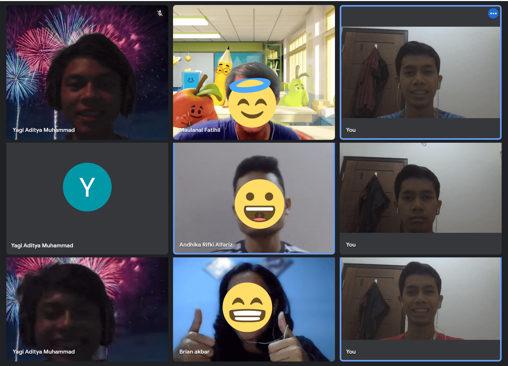
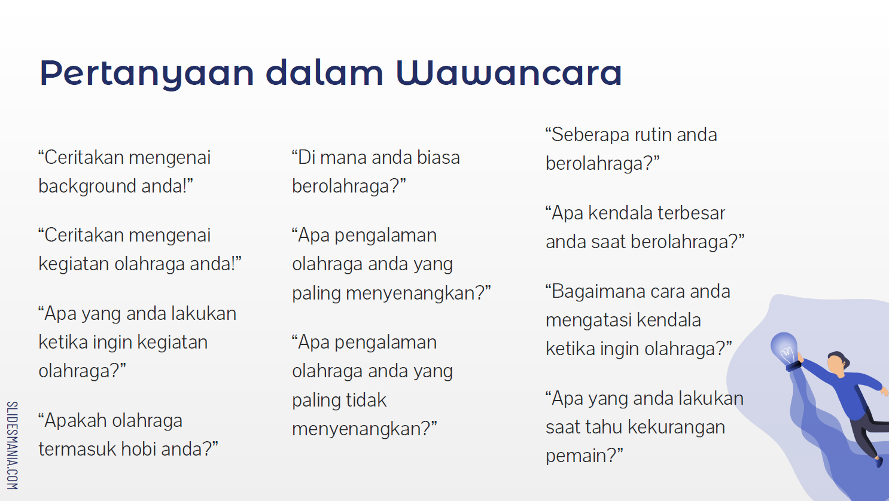

Topik permasalahan: Olahraga Rekreasional
Fase needfindings (penggalian kebutuhan) adalah fase pertama dalam proses desain pengalaman pengguna (UX design). Pada tahap ini, desainer mencari tahu mengenai permasalahan nyata yang dialami orang-orang dari sebuah topik tertentu. Dalam hal ini, kami memilih olahraga rekreasional sebagai topik utama. Wawancara terhadap 3 orang secara acak dilakukan secara daring di 3 waktu yang berbeda.

“di Surabaya sebenarnya banyak tempat main tetapi susah untuk mendapatkan informasi dari tempat tersebut.”